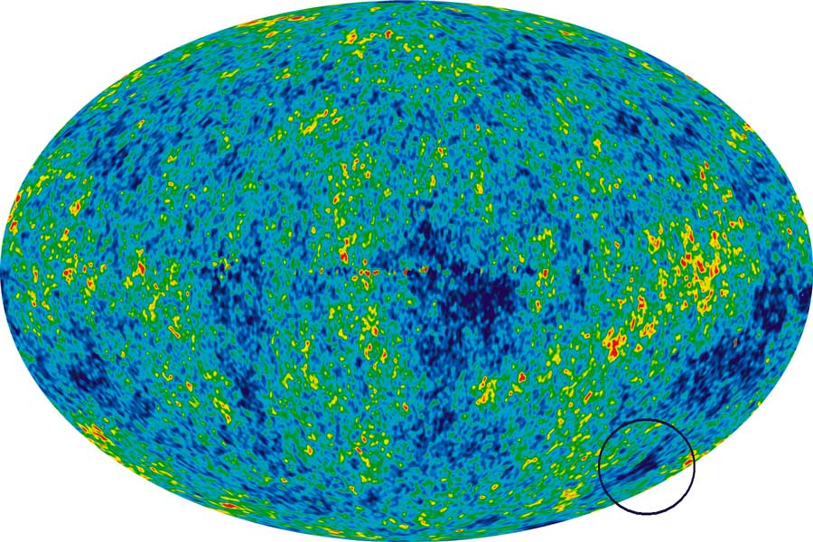

Our Universe is rapidly expanding and houses a lot of galaxies, solar systems and nebulae and is widely agreed to have come about from the Big Bang. But what if there were another universe altogether? What would its story be?
"The Universe" is a term that literally defines time and space. The word Universe comes from the Latin Universum meaning “all together” or “everything”. So when scientists bring up the concept of alternate realms outside of time and space, it sounds like something straight out of a science fiction novel. But the evidence for more Universes is more than you might expect.
CMBR “Cold Spots”
- The Cosmic Microwave Background Radiation, in a perfect and solitary Universe, would be evenly spread across the entire Universe. However, as shown in the diagram below, there are numerous “Cold spots” in the CMBR. Cold is a relative term: The average temperature of the CMBR is around 3 degrees above absolute zero, while the difference between the hottest and coldest spots is around a ten-thousandth of a degree. These cold spots could be caused by offshoot Universes, using the thermal energy from the CMBR to power their own “Big Bang”.
Statistical proof:
- Thousands of years ago, humans believed that the Earth was unique. Now we know that seven other planets orbit our Sun. We once thought the Sun was unique. Now we know that there are billions of other stars just like the Sun in the Milky Way alone. Only a century ago, astronomers believed that the Milky Way was unique, but now we know that the observable Universe contains at least 100 billion other galaxies just like ours.
- Our Universe is perfect - too perfect. All the properties of physics in our Universe line up perfectly to support the formation of stars, galaxies, planets and life. The chance of our Universe being able to support life is more than a trillion to one. But if there were an infinite number of Universes, the chance that one of them would be able to support and sustain intelligent life would be certain.
What would another Universe look like?
- There are 26 fundamental constants that can be used to define our Universe. By changing the value of one of these constants and keeping the other 25 the same, we can predict what an alternate Universe would be like, from moments after its own Big Bang.
Example 1: Stronger Gravity
- The strength of gravity is one of the 26 Fundamental properties of our Universe. If gravity was 10% stronger, the size of a star would need to be scaled up accordingly, so that the rate that hydrogen is converted into helium is fast enough for the output energy to exceed the stronger gravity. Assuming this alternate Universe is of the same age as ours (13.7 billion years), the Universe’s hydrogen supply would have been depleted around 6-7 billion years ago - even before the Sun formed. The majority of the surviving stars would be Red Giants, fusing Helium into heavier elements such as Carbon, Nitrogen and Oxygen. This universe would “die” (when a Universe reaches a state of perfect thermal equilibrium, where every particle is at its minimum energy state)
Example 2: Larger Cosmological Constant
- The Cosmological constant describes the rate of expansion of the Universe. By increasing it by 10%, the speed of the expansion of the Universe would increase by a power of 1000. This would mean that the distribution of fundamental particles would be so spread out, atoms such as Hydrogen and Helium would not be able to form as the distribution of particles in proportion to the volume they occupy would be lowered by a power of 1000. The result would be a “dead” Universe that has reached a state of perfect equilibrium, with every particle reaching its minimum energy state, and therefore never trying to interact with any other particle. Every particle and position in this Universe would have a temperature of 0K (Absolute Zero) within a few million years.
Example 3: Boosting the Strong Coupling Constant
- The strong coupling constant is what binds protons and neutrons into an atomic nucleus. By boosting its strength by 10%, the nucleus of every atom would collapse into a black hole, and then instantly evaporate due to Hawking Radiation. The result would be another dead universe, which would not last more than half a million years before cooling to absolute zero.
NOTE: All statistics for alternate Universes were generated using Space Engine, Universe Sandbox, as well as a sequence of renders and simulations, performed using the Big Ugly Rendering Project and the Citizen Science Grid, and based on the GASOLINE2 project by Princeton University.